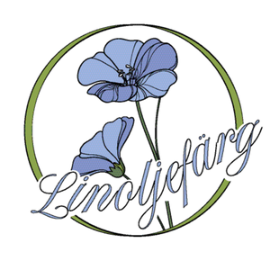
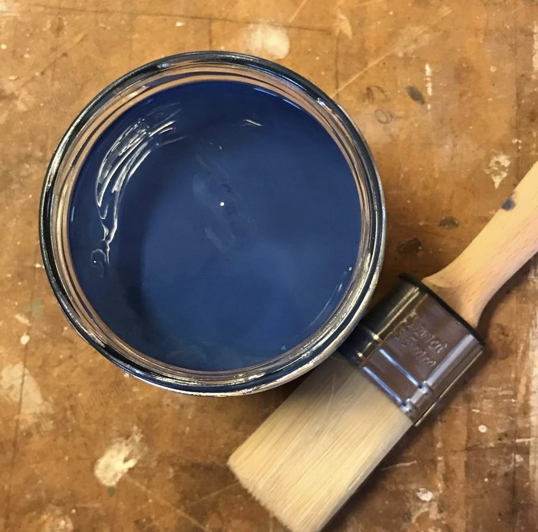

Linoljefärg och skötselråd

För mig är äkta linoljefärg det självklara valet när jag renoverar eller målar fönster. Jag använder linoljefärg från svenska WIBO Färg — en etablerad tillverkare med flera decenniers erfarenhet av traditionellt hantverksmåleri.
Varför linoljefärg?
Linoljefärg är ett av de äldsta och mest beprövade ytskikten för att färga in och skydda trä. Till skillnad från moderna färger väter linoljan in i underlaget och förhindrar vatteninträngning — ingen annan färgtyp skyddar träet bättre mot fuktskador.
Linoljefärg består huvudsakligen av kokt linolja, pigment och krita — naturliga råvaror utan lösningsmedel. Det är en färg som inte avger något hälsovådligt när den torkar, vilket gör den till ett naturligt och miljövänligt val.

Så fungerar linoljefärg på trä
Linoljefärgen tränger in i träet och skyddar fibrerna inifrån och ut. Trä målat med linoljefärg kan inte ruttna. Solens strålar bryter ner oljan över tid — men pigmentet finns kvar och återfår sin lyster när ny olja tillförs vid underhåll.
En annan fördel är att linoljefärg alltid går att underhållsmåla när det är dags. Då behöver man normalt inte skrapa bort den gamla färgen — det räcker med avtvättning och ett nytt lager. Det gör den lättskött och långsiktigt prisvärd.
Skötselråd för dina linoljemålade fönster
Jag rekommenderar att du använder linoljefärg istället för ren linolja vid underhåll, för bästa resultat. Några praktiska tips:
- Inspektera fönstren årligen och löpande — slitaget varierar beroende på väderstreck och lokala förhållanden
- Syd- och västsidor slits snabbare än nord- och ostsidor och kan behöva underhåll oftare
- Gör småreparationer när det behövs istället för att vänta tills hela fönstret behöver målas om
- En mild avtvättning då och då håller fönstret rent och förlänger livslängden
Trygg kvalitet från början till slut
Du som läser detta kan känna dig trygg med att jag, i alla led av mitt arbete, gör allt för att du ska få bästa möjliga slutprodukt. Rätt färg, rätt teknik och rätt tålamod — så håller dina fönster i generationer.